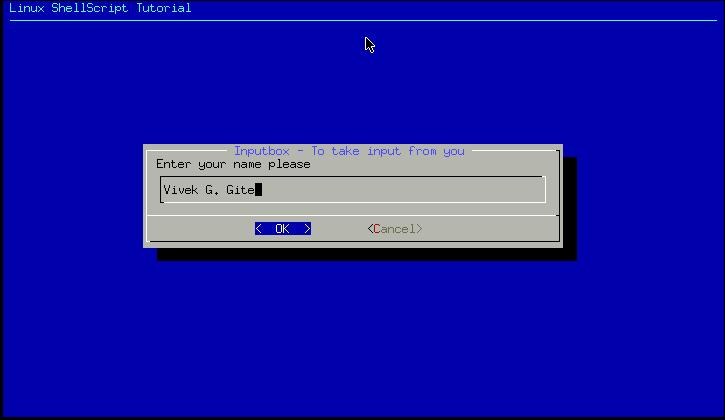

| Linux Shell Scripting Tutorial (LSST) v1.05r3 | ||
| Chapter 4: Advanced Shell Scripting Commands | ||
| | ||
$ cat > dia4 |
Run it as follows:
$ chmod +x dia4
$ ./dia4

Inputbox
is used to take input from user, In this example we are taking Name of
user as input. But where we are going to store inputted name, the
answer is to redirect inputted name to file via statement 2>/tmp/input.$$ at the end of dialog command, which means send screen output to file called /tmp/input.$$, letter we can retrieve this inputted name and store to variable as follows
na=`cat /tmp/input.$$`.
For input box's exit status refer the following table:
| Exit Status for Input box | Meaning |
| 0 | Command is successful |
| 1 | Cancel button is pressed by user |
| 255 | Escape key is pressed by user |
| | ||
| Confirmation Box (yesno box) using dialog utility | User Interface using dialog Utility - Putting it all together | |